Strategic positioning
Three linked positions establish the project as a production base, cultural district and lived ecological city.
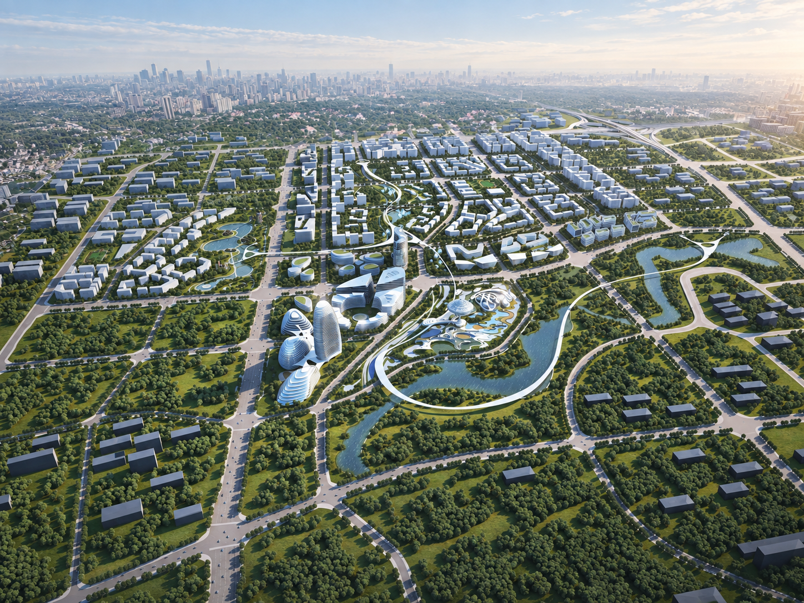
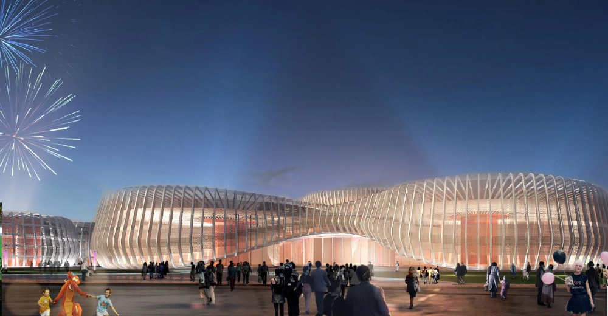
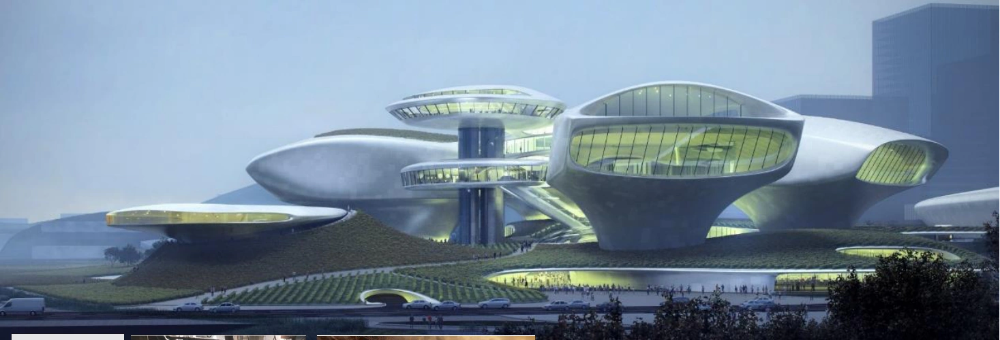
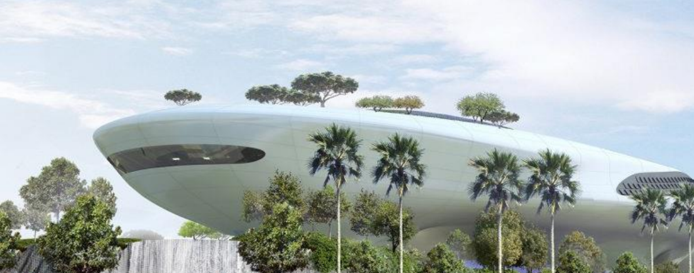
Jiulong Film City is a proposed film, culture and mixed-use district in Taojia, Jiulongpo. The plan positions film as an urban operating system: a reason to make, learn, visit, work and stay.
Its ambition combines a one-stop digital production base, a western China film culture and commercial district, and an ecological everyday city connected to Chongqing and the wider Chengdu–Chongqing region.
Three linked positions establish the project as a production base, cultural district and lived ecological city.
The landscape and movement structure makes the large district legible as one connected urban field.
Fifteen uses are grouped into four platforms so production, learning, culture and commerce reinforce one another.
The staged plan brings the core production offer forward while keeping the long-term network visible.
2021–2025 Phase I
2026–2027 long-term plan
50,000 industry population target
The project is set within the Chengdu–Chongqing development corridor, with Taojia positioned as an emerging innovation centre in Jiulongpo. The proposal uses this regional condition to connect film production, talent, culture and everyday urban life.
The existing water landscape is treated as more than scenery. It becomes the armature for a district where large production spaces can sit alongside parks, streets, education and hospitality.
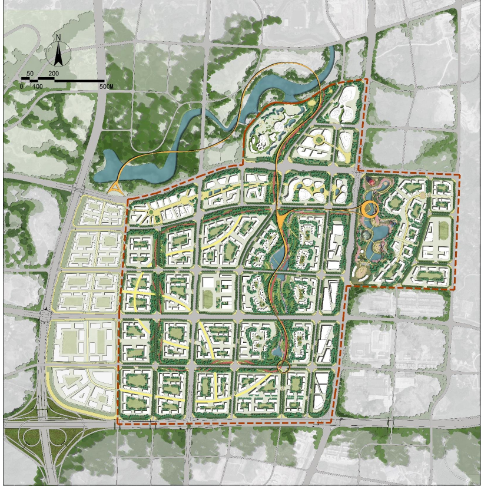
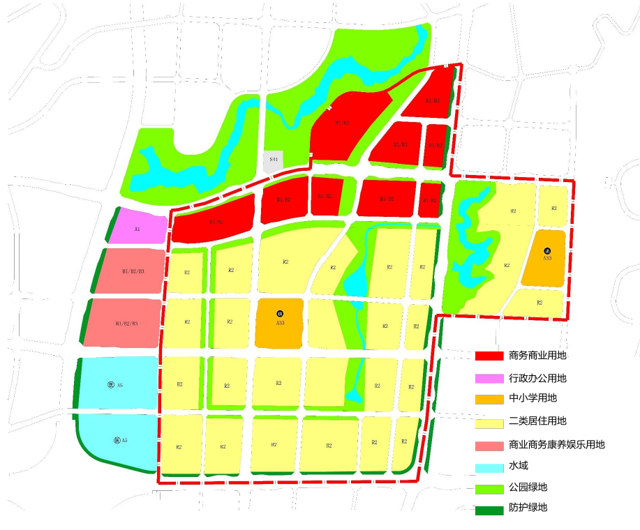
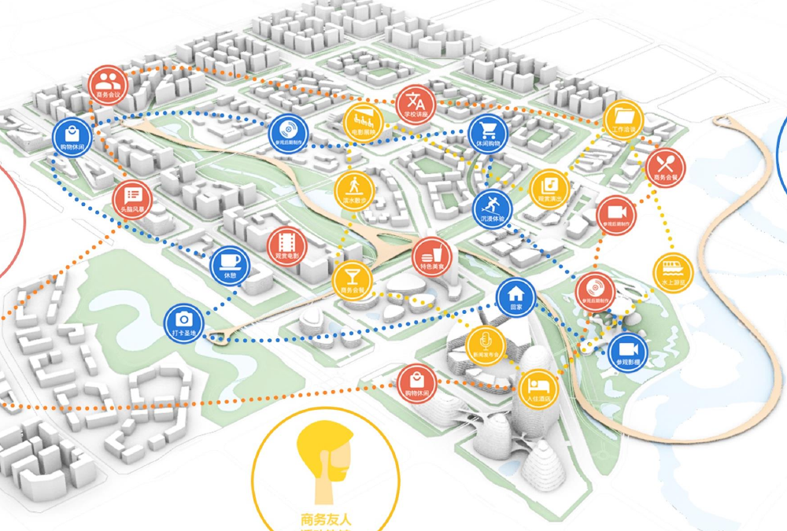
The plan organizes the large site through a repeatable structure. Water and landscape form the ecological loop; two anchor parks carry the film and leisure identity; three axes connect the district to the city; and multiple community centres distribute daily life.
A continuous green and water system gives the district a shared public ground.
The Film Industry Park and Ali Theme Park combine production with public attraction.
Central ecology, film-industry development and high-speed city display organize movement and address.
Intelligent community centres bring everyday services into the wider production landscape.
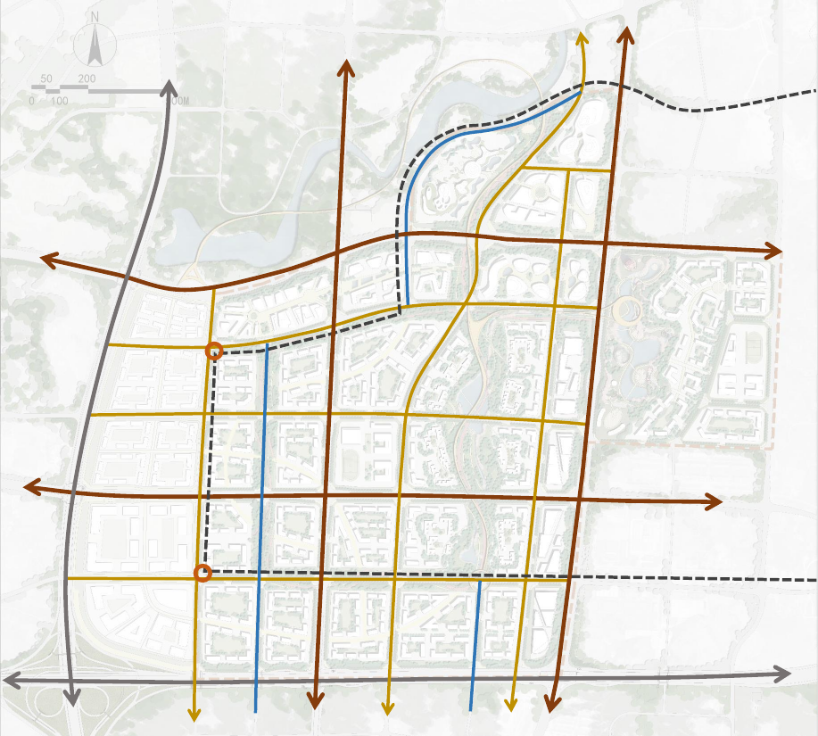
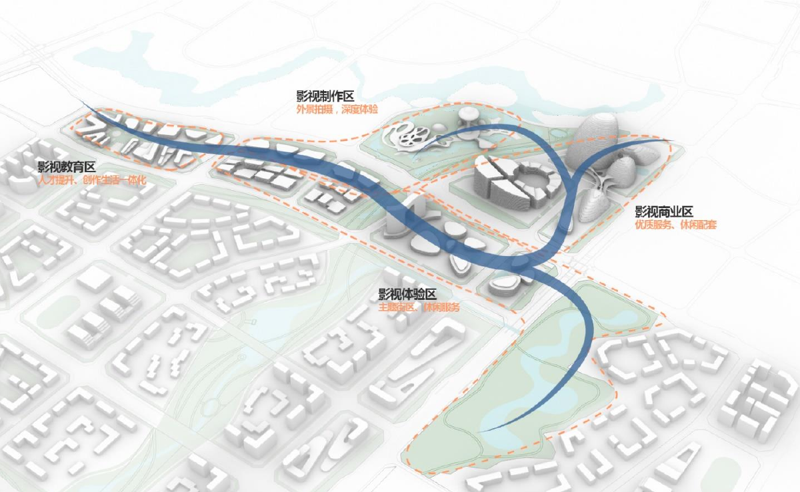
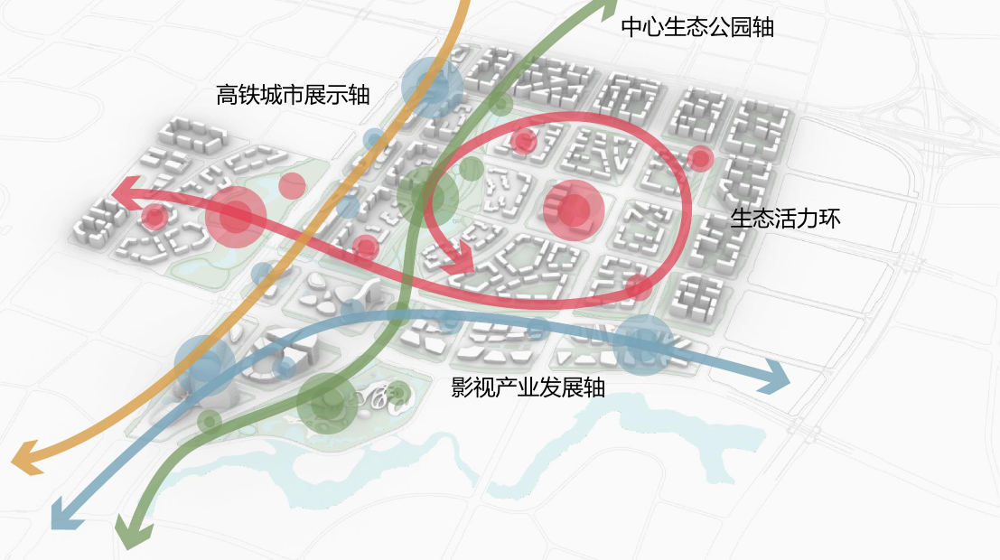
The programme is deliberately mixed. Production attracts crews and companies; education develops the next generation; culture opens the district to the public; commerce supports a place that must stay active between shoots.
Fifteen uses are grouped into four platforms that share the same urban ground.
Studios, exterior shooting, production support, post-production, media exchange and digital creative work.
Master studios, industry–academia base and arts-exam training build a long-term talent pipeline.
Film-themed streets, shows, technology experiences and an Ali theme park turn production into public life.
Sunac Mall, hotels and talent apartments provide the services needed by visitors, crews and residents.
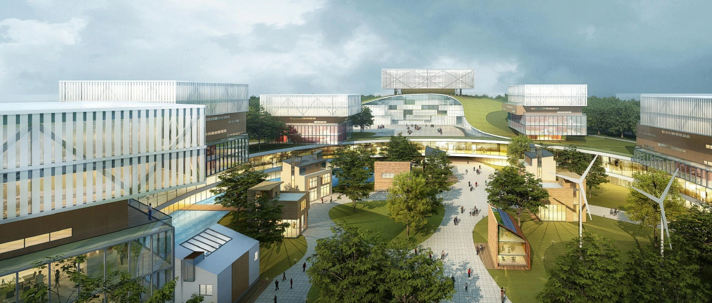
Phase I concentrates the visible production, education, culture and hospitality offer between 2021 and 2025. The long-term programme from 2026 to 2027 deepens the digital, post-production and media-exchange network.
Studios and support spaces, exterior shooting, post-production, film offices, education, Ali Theme Park, hotels, themed street and Sunac Mall.
Digital studios, additional studio support, master studios, post-production, film and short-video offices, and a media exchange centre.
The proposal targets an industry population of 50,000 within three years and 5,000 trained industry talents each year.
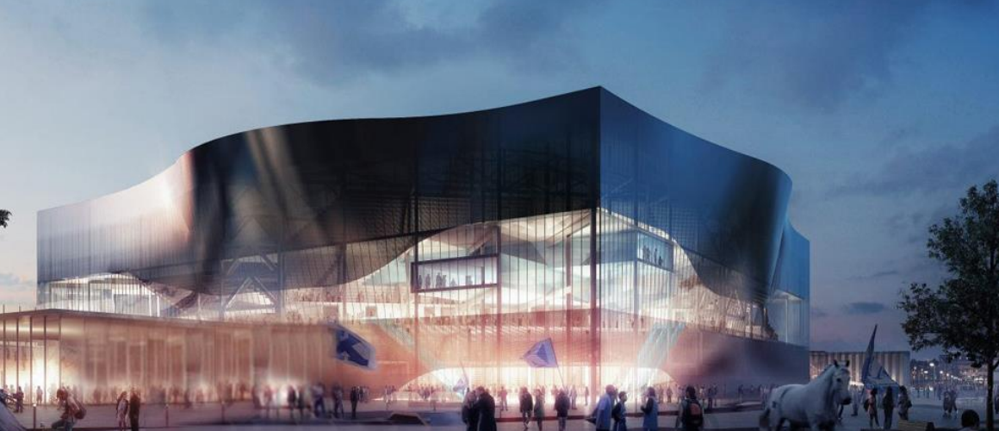
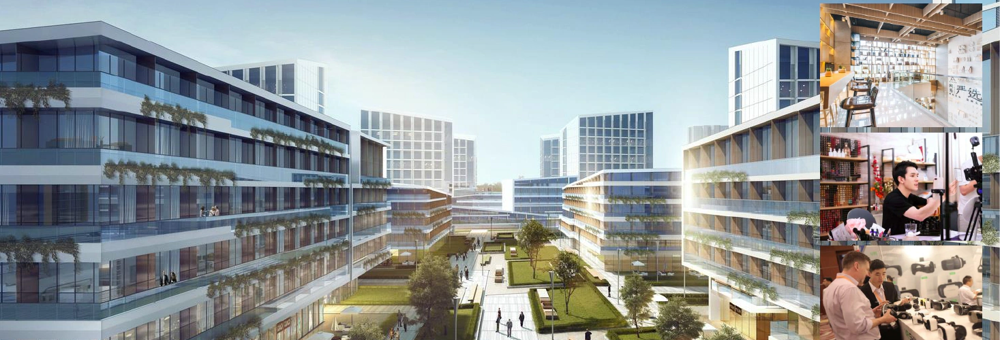
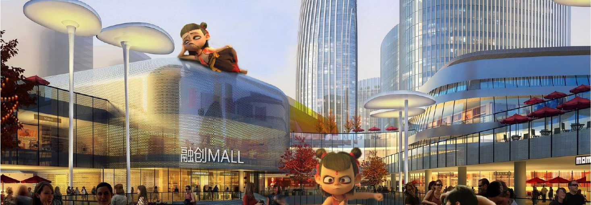
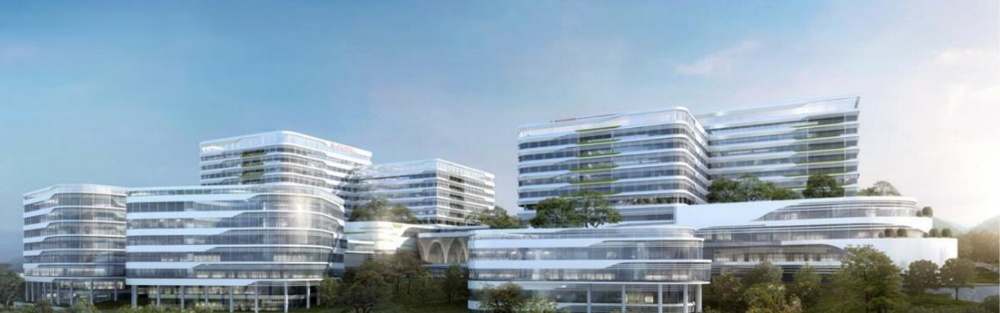
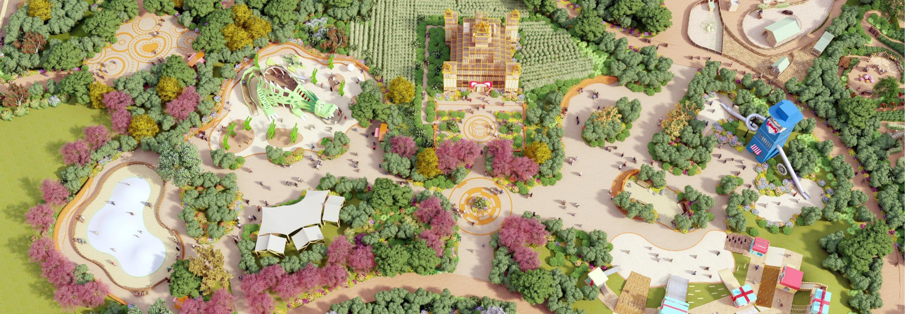
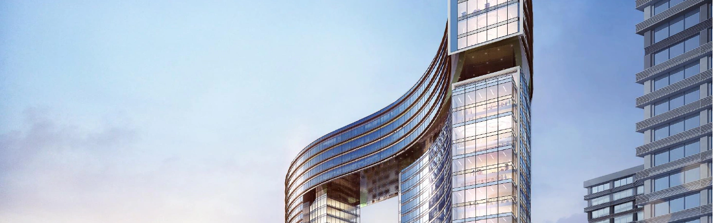
The supplied 2020 stage-development deck is treated here as a project record. Its area figures, phasing and social goals describe the proposal at that moment, rather than a current construction status.
Together, these metrics frame Jiulong as an operating district: a place where production capacity is paired with talent, public culture, landscape and everyday services.
PowerPoint presentation titled “Jiulong Phase Results”, prepared as a planning and development record.
Source figures remain identified as proposed values.The page is an English draft based on the supplied material. Client, individual role and formal deliverable credits can be refined when the project archive is confirmed.
The page structure now follows the Jieyang project: project record, contribution breakdown, research base, spatial framework, programme strategy, phasing and proposal record. Content, metrics and credits can be adjusted in the next pass.
Back to top ↑